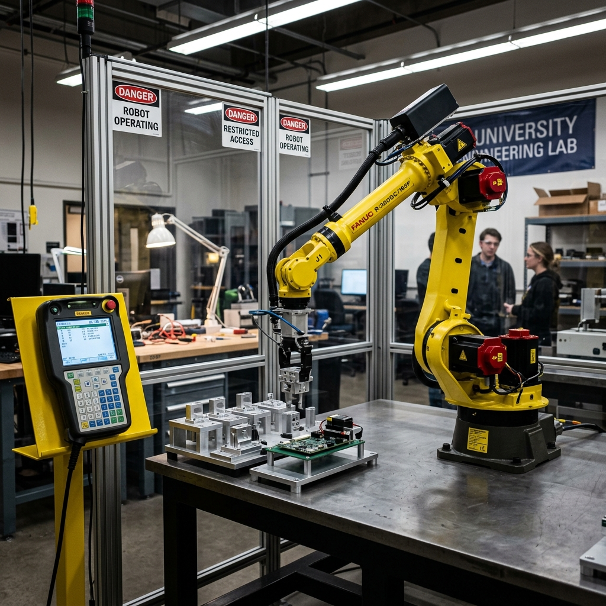

Program a Universal Robots UR5e to transfer cell phone cases from a part carrier to an assembly fixture — all using the PolyScope teach pendant.
Identify the six joints (Base → Shoulder → Elbow → Wrist 1-3) and work envelope of the UR5e.
Navigate the Program tab, Move tab, I/O tab, and Dashboard to control and monitor the robot.
Build a complete robot program with 5 waypoints (A→B→C→D→E) using MoveJ, MoveL, Set, Wait, and Direction commands.
Know the location of the emergency stop button before the robot moves. Activate it immediately in any abnormal situation.
Do not enter the robot's operating range unless the risk assessment permits it.
Required at all times. Closed-toe shoes with no loose clothing or jewelry.
Test all programs in simulation mode before running on the real robot.
Keep your head and face outside the robot's reach at all times while operating.
Build programs by selecting nodes (Move, Set, Wait, etc.) and placing them in the Program Tree. Cut, Copy, Paste supported.
Manually jog the robot using arrow keys, Freedrive mode, or direct data entry of target coordinates.
Monitor and set live digital/analog Input/Output signals to and from the robot controller.
Start, stop, single-step, and restart programs. Speed slider adjusts robot velocity in real time.
Joint-space motion. Each joint reaches the target simultaneously. Results in a curved path for the tool. Fast and efficient for large movements.
Linear Cartesian motion. The TCP moves in a straight line between waypoints. Used when the path must be controlled — e.g., entering a fixture.
Linear motion at constant speed with circular blends. Used for process operations like gluing or dispensing.
| Command | Type | Description |
|---|---|---|
| Fixed Waypoint | Waypoint | Physically move the robot to the position and teach it. Stored as absolute Cartesian coordinates. |
| Relative Waypoint | Waypoint | Position defined relative to the robot's previous position (e.g., "2 inches left"). |
| Direction | Motion | Defines a vector direction for linear motion with a stop criterion (e.g., move Z- until a sensor reads High). |
| Wait | Timing | Pauses execution for a set time or until an I/O signal condition is met. |
| Set | I/O / Config | Sets digital/analog outputs to a value or sends a single pulse. Also used to set robot payload. |
| Popup | HMI | Displays a message on screen when the program reaches this node. |
Point A — Home: Create a MoveJ command. Add a Fixed Waypoint for the home position.
Point B — Approach Pick: Add another Fixed Waypoint to the same MoveJ command. This is the approach position above the part carrier.
Point C — Pick Position: Create a NEW MoveL command (not MoveJ). Add a Fixed Waypoint. Verify Tool Position values match the tutorial before proceeding.
Close Gripper: Create a Set command → Set Digital Output → CloseGripper → High.
Set Payload: Create a Set Payload command → Custom Payload → Mass → 0.05 kg. This prevents a protective stop when carrying the part.
Wait (Grip): Create a Wait command → 1.0 seconds. Gives the gripper time to fully close on the part.
B → A → D (Retract, Home, Approach Place): Copy Point B and Point A. Paste them after the Wait in that order. Then create a new Fixed Waypoint for Point D. Verify Tool Position values for D.
Point E — Place Position: Create a Direction command → Direction: Z- → Add Until → Until Digital Input → AsmWpAvail → High. The robot moves down until the assembly sensor detects the part.
Open Gripper: Create a Set command → Set Digital Output → OpenGripper → High.
Reset Payload: Create a Set Payload command → Select Payload (resets to empty gripper weight).
Wait (Release): Create a Wait command → 1.0 seconds. Gives the gripper time to fully open and release the part.
D → A (Retract and Return Home): Copy Point D and Point A. Paste after the Wait to retract from the fixture and return to home.
Reset Gripper: Create TWO Set commands:
→ CloseGripper → Low
→ OpenGripper → Low
(Order does not matter. This deactivates both gripper signals.)
Popup Message: Create a Popup command. Add a message for the worker confirming the cycle has completed successfully.
| Term | Definition |
|---|---|
| Program Tree | The left-side panel showing the program as an ordered list of commands. Click any node to view/edit its parameters. |
| TCP | Tool Center Point — the characteristic point at the end of the robot arm, shown as a small blue ball in the interface. |
| Dashboard | Bottom panel with Start/Stop/Step controls and a real-time speed slider that respects safety limits. |
| Variables | Store values during runtime: bool, int, float, string, pose (X,Y,Z,RX,RY,RZ). |
| Freedrive | Physical teaching mode — hold the button and manually move the robot arm to the desired position. |
| Installation Variables | Variables that persist across programs and are saved with the robot installation file. |
Displays live digital and analog I/O signals in real time (updated at 10 Hz). Changes during program execution will stop the program.
Toggle from the Dashboard. Robot arm does not move physically. Use this every time you are unsure about the next movement.
| Signal | Type | Action |
|---|---|---|
| CloseGripper | Digital Output | Set High → gripper closes and grips the part |
| OpenGripper | Digital Output | Set High → gripper opens and releases the part |
| AsmWpAvail | Digital Input | Goes High when assembly fixture detects a part is in position |
1. Safety Always: Emergency stop first — know its location before moving the robot.
2. Simulate Before Running: Always test in simulation before running on the real arm.
3. MoveL at the Pick: MoveJ at Point C risks collision — always use MoveL for tight spaces.
4. Verify Tool Position: Check TCP values at Points C and D match the tutorial exactly.